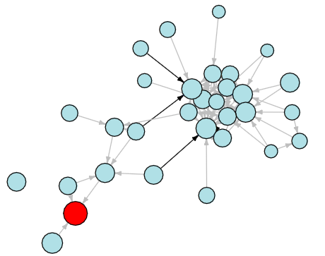
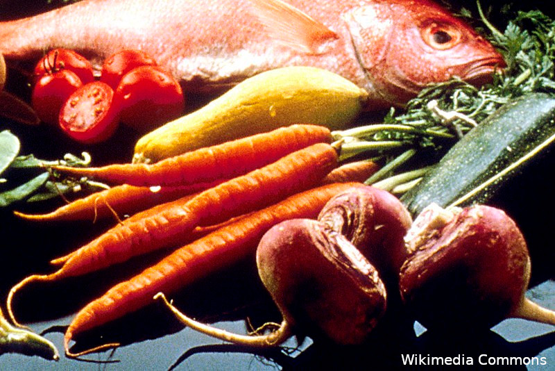
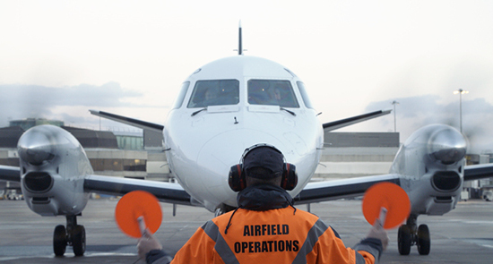
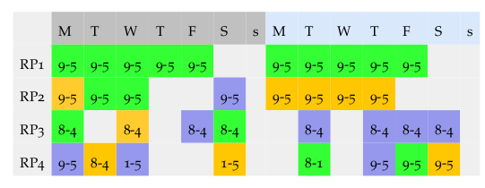

A full publication list for our group can be found here.
Our work spans from fundamental research to applied consultancy. Below is a small taste of the projects we've been involved in. Whether you are in academia, business, or elsewhere, if you'd like to collaborate with us please get in touch. In all applications, we address associated challenges of safeguarding anonymity, and preserving privacy, trust and security.
Analysis and visualisation of fitness landscapes

Led by Prof Gabriela Ochoa, DAIS group members are conducting world-leading fundamental research to understand how heuristic methods such as evolutionary algorithms and metaheuristics operate. You can learn more about this work here.
Food Recognition Projects

Automated food recognition makes use of computer vision technology to automatically recognise and classify different types of food. Researchers at Stirling are applying food recognition in various settings including hospitals, where it is used to monitor patient nutrition and food waste, and care homes where it is being trialled as an alternative to manually completed food diaries.
Airport and aircraft operations

We have applied state-of-the-art machine learning and optimisation algorithms to the problems of routing aircraft both on the air and on the ground. Machine learning is applied to predict the time and fuel consumption of a given route, considering weather, other traffic, and many other external factors. Hybrid optimisation approaches combining the best of exact shortest path algorithms with genetic algorithms efficiently allocate routes in real-time. This has involved collaborations with names such as Manchester Airport and KLM. This work has received funding including £255k from ESPRC through the TRANSIT project and £222k from InnovateUK through the AirOpt project.
Explainable AI for rostering and scheduling

We have worked with British Telecom for several years to develop advanced algorithms to allocate rosters to engineering workforces. Currently a joint project worth around £70k funded by BT and The Data Lab is investigating explainable approaches to solving this problem, whereby good solutions are presented to decision makers with human-readable explanations for why particular rostering choices were made by the algorithm.